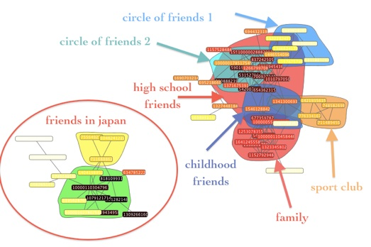

iLCD
iLCD
Community detection algorithm
This is a work in progress version of the algorithm !
It’s not really user friendly and can still have some bugs. Please report to me any remarks, suggestion, etc...
--------------------------------------------------------------
iLCD (readme included)
The program is in Java and should be multi-platform.
--------------------------------------------------------------
Input file examples («Les miserables» characters network, wikiLeaks cables keywords dynamic network)
--------------------------------------------------------------

Visualisation of a facebook personal network using iLCD and visualisation tool
--

CAZABET Rémy webpage